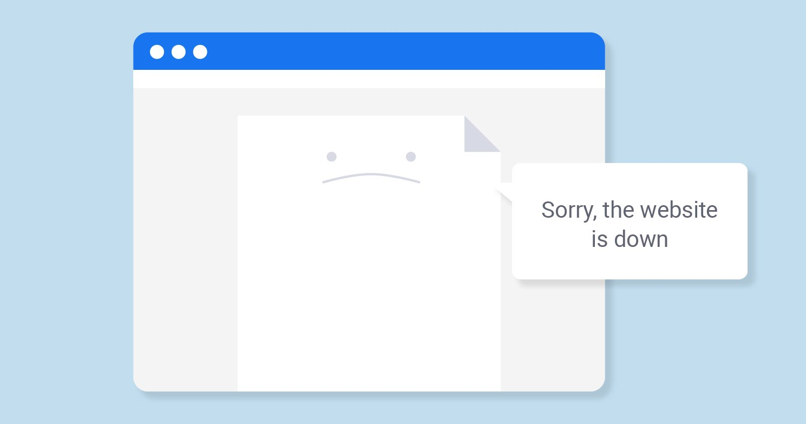

|
PROblem1
The first major problem that the users of the TU website face is its performance and speed, specially at the beginning and ending of each semester because of the high request rate resulting from the huge number of users wanting to register and modify their semester schedules -at the begging- and adding and checking the results -at the end- .
To discuss this problem we have to take a look at the structure and means used to implement the site. The TU website uses JSP which depends on the JavaBeans that depends on the JVM and Oracle Application Server, so from the first glance we can see the many layers the separate the user page displayed on the browser and the server; which naturally will result in a noticeable decrease in the speed.
As we have grasped the gist of the problem, now we should take a deeper look at it. For starter lets make sure we understand each layer of the mentioned ones and its role; so we can find better alternatives and present reliable solutions for the problem.
1) JSP
A website is a collection of static files, HTML files, graphics and images and when hosted on a server, these websites provide different dynamic functions. Websites that provide a dynamic function can act as web applications.
JSP is an acronym for Java Server Pages. It is a server-side technology which helps the developers or the users to generate web-based pages. When we use JSP, we can implement, the Java API’s by default into the web-programming and also with HTML AND XML tags. Being a server-side programming language, it helps in creating dynamic web pages. Not only with Java API’s, but a connection with the database is an added advantage.
A JSP (Java Server Page) is translated into a regular Servlet -a Servlet is a Java program module that runs on a server and can handle the client's request- first. As any servlet would do, it translates the requests, but first time only unlike servlets. The result is obtained when the translator recognizes the file name with its extension as “.jsp”. Then it is forwarded towards the servlet again or a “.jsp” output can be generated.
There are many advantages for using JSP but as we are concerned here with the speed, JSP is not time and memory-efficient because the compilation of JSP takes place on the server. So we can say that using the JSP affects the speed in which the website responds to the requests in.
2) JavaBeans
A JavaBean is a Java class that should follow the following conventions:
* It should have a no-arg constructor.
* It should be Serializable.
* It should provide methods to set and get the values of the properties, known as getter and setter methods.
According to Java white paper, it is a reusable software component. A bean encapsulates many objects into one object so that we can access this object from multiple places. Moreover, it provides easy maintenance.
3) JVM
So if we are using JavaBeans it means that we need the JVM. The Java Virtual Machine or JVM is an environment that provides execution of Java programs. The code written in Java is compiled into an intermediate code which is known as the bytecode. The bytecode is the one that is executed by JVM. Any code which has been compiled into the bytecode can run on any system that has JVM installed on it.
Usage of JVM highly affects the speed in which the application runs or the website responds, In a Java Virtual Machine, the code is first converted into bytecode and then the bytecode is converted into the machine code for the system to finally run it. Therefore, this is the reason why the Java Virtual Machine tends to work slower and hence making a Java code run slower when compared to its equivalent C or C++ code. The compilation to bytecode that helps the code to run on any platform eventually turns out to be a disadvantage when performance is concerned.
Java bytecode is system neutral and optimization of it according to any specific hardware set is not possible. The reason behind this is that for a code to get optimize, system specific features are the necessity and since the bytecode is system neutral it is not possible to optimize it.
Just like a real computing machine, Java Virtual Machine also manages the memory space and processes instructions. Therefore, the Java Virtual Machine is responsible for almost everything in running a Java program. A Java code is completely dependent on the Java Virtual Machine which makes it platform dependent and in itself is platform dependent.
4) Java Application Server
The application server is a critical component of a Java application architecture. Popular Java application servers are Oracle WebLogic -which the TU website uses-, IBM WebSphere, JBoss, WildFly, Tomcat, etc. A bottleneck in the application server would directly impact the business transactions and affects application performance and end-user experience. Problems in servlet execution, bean caching, queuing, JDBC connectivity, etc. will affect performance.
|
|
|
PROblem1 solutiON
We can conclude that the best solutions for the speed and performance problem are the direct ones, by reducing the number of layers separating the codes pieces and CPU of the server from each other. From many alternatives like using ASP.net and PHP.
a) PHP
PHP stands for Hypertext Preprocessor (originally Personal Home Page) and is an open-source, server-side, general-purpose scripting language that can be embedded in HTML. PHP is an interpreted language and the interpretation is done only once. It also means that PHP works only on the services that have PHP installed. Luckily, many systems do support the scripting language and it is used by Facebook, Wikipedia, Tumblr, etc.
Java and PHP have some similarities. For example, they are both open-source so they are available to the public. The languages are object-oriented and have a similar syntax. At the same time, they are different and are tailored for different purposes.
First of all, PHP can be easily used across all operating systems, including Linux, macOS, MS windows, etc. On the contrary, Java operates only with systems that have JVM installed.
Development in PHP is time-efficient and cost-effective as Java needs a compiler twice during the process. PHP makes it simpler and cheaper to edit programming codes through interpretation. Java needs additional time after launching to become fully functional. However, PHP speed stays stable throughout the process. As PHP doesn’t require any special environment like JVM, that’s where it gains a competitive edge over Java. Its Write Once, Run Anywhere (WORA) approach makes it an efficient and preferred choice for cross-platform processing. Several huge websites use PHP for back-end development, i.e. Facebook, Yahoo, Wikipedia, Tumblr, and WordPress are to name a few.
b) ASP.NET
.NET is a developer platform made up of tools, programming languages, and libraries for building many different types of applications. ASP.NET extends the .NET developer platform with tools and libraries specifically for building web apps.
ASP.Net is faster than Java and can be used with C# language.

|